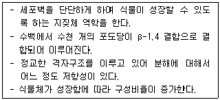
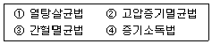

유기농업산업기사 (2011-08-21 기출문제)
1과목: 재배원론
1. 벼의 화분방출ㆍ수정 등에 장해를 일으켜 불임현상이 나타나는 냉해는?
- 지연형냉해
- 장해형냉해
- 결실형냉해
- 임실형냉해
(정답률: 93%)

2. 광합성량에서 호흡에 의한 유기물 소모(이산화탄소방출)를 제외한 것은?
- 외견상 광합성
- 진정광합성
- 광보상점
- 광포화점
(정답률: 71%)
3. 엽면증산이나 증발작용을 억제하고자 할 경우 살포하는 약제는?
- NAA
- IBA
- OED
- ABA
(정답률: 67%)
4. 후대검정을 실시하는 시기는?
- F1세대
- F2세대
- F3세대
- F4세대
(정답률: 77%)
5. 작물의 종자로 전염될 수 있는 병은?
- 벼 도열병
- 벼 호엽고병(줄무늬 잎마름병)
- 복숭아 탄저병
- 토마토 청고병(풋마름병)
(정답률: 91%)
6. 저온작물(맥류, 감자 등)의 생육적온 범위로 가장 적합한 것은?
- 0 ~ 10℃
- 5 ~ 15℃
- 10 ~ 18℃
- 15 ~ 18℃
(정답률: 54%)
7. 월동작물의 동해에 대한 설명 중 잘못된 것은?
- 저온 경화가 된 것은 내동성이 강하다.
- 적설(눈)의 깊이가 깊을수록 지온이 높아진다.
- 당분의 함량이 높을수록 내동성이 약해진다.
- 세포의 수분함량이 높으면 내동성이 약해진다.
(정답률: 65%)
8. 수량삼각형에서 나타내고 있는 작물의 최대 수량을 얻기 위해 적용되는 3가지 요소에 해당되지 않는 것은?
- 유전성
- 환경조건
- 재배기술
- 비옥도
(정답률: 80%)
9. 벼 기계이앙 재배 시 중묘의 육묘 일수는?
- 8~10일
- 20~25일
- 30~35일
- 40~45일
(정답률: 알수없음)
10. 삼투포텐셜과 압력포텐셜이 같은 때에 세포의 형태는?
- 팽만상태
- 원형질 수축
- 원형질 분리
- 일류현상
(정답률: 94%)
11. 증산계수가 500인 어느 작물의 건물생산량이 200kg/10a 이라면 생육기간에 증산된 물의 양은?
- 약 10톤/10a 이다.
- 약 40톤/10a 이다.
- 약 100톤/10a 이다.
- 약 250톤/10a 이다.
(정답률: 64%)
12. 맥류의 수발아 방지를 위한 발아억제제로 알맞은 것은?
- ABA
- Ethylene
- α - NAA
- Uracil acid
(정답률: 60%)
13. 호흡을 억제하여 잎의 엽록소·단백질의 분해를 지연시키고, 잎의 노화를 방지하는 식물호르몬은?
- Auxin
- Gibberellin
- Cytokinin
- Ethylene
(정답률: 62%)
14. 종자 선종에서 까락이 없는 메벼 종자에 알맞은 용액의 비중은?
- 1.03
- 1.06
- 1.10
- 1.13
(정답률: 72%)
15. 토양수분에 대한 설명 중 알맞지 않은 것은?
- 수분당량은 ㎊(potential force) 값이 2.7 이내로서 포장용수량과 거의 일치한다.
- 영구위조점에서의 토양 건조중에 대한 수분의 중량비를 위조계수라 한다.
- 포장용수량 이상의 토양수분은 모관수로서 작물생육에 이롭다.
- 포장용수량과 영구위조점 사이의 수분을 유효수분이라 한다.
(정답률: 62%)
16. 벼 기계이앙 상자육묘에서 20일 정도 육묘한 것은?
- 어린모
- 치묘
- 중묘
- 성묘
(정답률: 알수없음)
17. 작물 재배와 품종개량에 있어서 다음 중 차세대로 유전하는 변이는 어는 것인가?
- 돌연변이
- 환경변이
- 방황변이
- 소재변이
(정답률: 85%)
18. 감자, 목초 종자 등의 휴면타파, 발아촉진에 효과적인 호르몬은?
- 옥신
- 지베렐린
- 시토키닌
- ABA
(정답률: 79%)
19. 교잡육종의 여교잡법에 해당하는 것은?
- A × B × C × D
- [(A × B) × C ] × D
- [(A × B) × B] × B
- (A × B) × (C × D)
(정답률: 100%)
20. 식물호르몬의 역할에 대한 설명 중 맞지 않는 것은?
- ABA는 식물의 환경저항성과 관련이 있다.
- 시토키닌은 기공의 개폐에 관여한다.
- 지베렐린은 경엽의 신장촉진에 효과가 있다.
- 옥신은 정아우세현상과 관련이 있다.
(정답률: 91%)
2과목: 토양비옥도 및 관리
21. 토양 수분 중 작물이 주로 이용할 수 있는 것은?
- 중력수
- 모세관수
- 흡습수
- 결합수
(정답률: 알수없음)
22. 유기물이 토양 특성에 미치는 영향으로 가장 거리가 먼 사항은?
- 보수성을 증대시킨다.
- 염기치환용량을 증대시킨다.
- 토양 입단구조를 발달시킨다.
- 완충능을 감소시켜 양분을 유효화시킨다.
(정답률: 86%)
23. 부피가 100cm3인 건조한 토양의 용적밀도(bulk density)가 1.20g/cm3 이다. 이 토양의 중력수분함량(중량%)을 20%로 조절하고자 할 때 필요한 수분의 양은?
- 12g
- 20g
- 24g
- 28g
(정답률: 79%)
24. 2차 광물(secondary mineral)에 해당하는 것은?
- 장석
- 석고
- 석영
- 운모
(정답률: 알수없음)
25. 화성암이며 우리나라 토양의 주요 모재가 되는 암석은?
- 화강암
- 천매암
- 석회암
- 현무암
(정답률: 95%)
26. 질소질 비료의 종류가 아닌 것은?
- 황산암모늄
- 요소
- 용성인비
- 염화암모늄
(정답률: 65%)
27. 토양의 완충력(buffer capacity)이란?
- pH의 변화에 저항하려는 성질
- 양분의 효과를 오래 나타내려는 성질
- 풍화작용에 의해 토양이 생성되려는 성질
- 토양수분을 유지하려는 성질
(정답률: 75%)
28. 일반토양과 달리 간척지나 시설재배지에서 특별히 고려해야 할 수분포텐셜은?
- 중력포텐셜
- 압력포텐셜
- 삼투포텐셜
- 매트릭포텐셜
(정답률: 73%)
29. 지각 및 토양을 구성하는 원소 중 가장 많은 것은?
- 규소
- 산소
- 탄소
- 수소
(정답률: 50%)
30. 탄질률(C/N ratio)이 높은 유기물질이 토양에 첨가될 때 일어나는 현상으로 틀린 것은?
- 고등식물과 미생물 간에 질소의 경쟁이 일어나 질소의 결핍을 초래 할 수 있다.
- 탄질률이 높은 유기물질에 무기질소를 가하면 토양 유기물의 유지에 이롭다.
- 탄질률이 높은 유기물질에 대한 분해작용이 일단 평형을 이루면 토양의 탄질률은 약 10:1 이 된다.
- 질산화작용에 의한 질산축적이 일어나지 않는다.
(정답률: 37%)
31. 영해지 토양의 개량방법으로 가장 적합한 것은?
- 심경한다.
- 석회질 비료와 칼리질 비료를 사용한다.
- 암거배수(暗渠排水)하고 관수(灌水)하여 씻어낸다.
- 철,망간,칼슘,마그네슘 등을 지속적으로 공급하다.
(정답률: 79%)
32. 다음 설명하는 식물체 구성물질은?

- 펙틴(pectin)
- 리그닌(lignin)
- 셀룰로오스(cellulose)
- 헤미셀룰로오스(hemicellulose)
(정답률: 알수없음)
33. 양이온교환용량이 200 cmolc/kg인 유기물의 비율이 4%이고 40cmolc/kg인 점토 20%가 포함된 몰리솔 1kg의 양이온교환용량은?
- 4
- 8
- 16
- 24
(정답률: 54%)
34. 다음 중 토양교질 입자표면에 가장 잘 흡착될 수 있는 질소의 형태는?
- 질산태 질소
- 암모늄태 질소
- 요소태 질소
- 유기태 질소
(정답률: 85%)
35. 생장에 필요한 에너지와 영양소를 대부분 유기물을 분해해서 얻으며, 산성에 강하고 토양의 입단화를 촉진할수 있는 진핵생물은?
- 세균(bacteria)
- 사상균(gilamentous fungi)
- 방선균(Actinomycetes)
- 바이러스(virus)
(정답률: 54%)
36. 토성(soil texture)이 가지는 의의에 해당하지 않는 것은?
- 토양의 투수성 정도를 판정하는 지표이다.
- 작물의 생산성을 결정하는 결정지표이다.
- 양분 보유력 정도를 판정하는 지표이다.
- 토양의 통기성 정도를 판정하는 지표이다.
(정답률: 알수없음)
37. 토양 pH와 인산의 유효도 관계에 대한 설명으로 옳은 것은?
- pH가 낮을수록 인산의 유효도는 높아진다.
- pH가 중성 부근일 때 인산의 유효도가 가장 높다.
- pH가 높을수록 인산의 유효도는 높아진다.
- pH는 인산의 유효도에 영향을 미치지 않는다.
(정답률: 80%)
38. 토양생성에 관여하는 5대 요인은?
- 모재, 부식, 기후, 수분, 지형
- 모재, 지형, 식생, 부식, 기후
- 모재, 기후, 시간, 부식, 식생
- 모재, 지형, 기후, 식생, 시간
(정답률: 50%)
39. 우리나라 토양환경보전법의 토양오염기중에 있는 오염물질로만 짝지은 것은?
- Cd, Cr6+, F, CN
- phenol, Ni, Sb, As
- BTEX, F, Hg, Ti
- PVA, Cu, Pb, TCE
(정답률: 50%)
40. 질산화작용(nitrification)에 대한 설명으로 틀린 것은?
- 암모니아태 질소를 질산태로 변화시키는 작용이다.
- 암모니아산화균과 아질산산화균의 작용으로 일어난다.
- 논토양의 환원층에서 일어난다.
- 질산화작용으로 생성된 질산은 토양에서 유실되기 쉽다.
(정답률: 59%)
3과목: 유기농업개론
41. 품종의 퇴화를 방지하는 동시에 특성을 유지하는 방법으로 가장 거리가 먼 것은?
- 자연교잡
- 영양번식
- 격리재배
- 종자갱신
(정답률: 70%)
42. 유기농가의 토양비옥도 유지를 위한 실천방법으로 거리가 먼 것은?
- 윤작
- 화학비료 사용
- 발효액비 사용
- 두과작물 재배
(정답률: 80%)
43. 과수원의 토양개량방법으로 거리가 먼 것은?
- 심경
- 유기물 사용
- 석회 사용
- 윤작
(정답률: 65%)
44. 유기농업을 실천할 때 병충해로부터 작물을 보호하기 위한 예방법으로 적절하지 않은 것은?
- 잡초감염지 동물방목
- 혼작
- 균형있는 양분관리
- 칼슘 공급
(정답률: 알수없음)
45. 유기물 투입에 따른 토양개량 효과로서 적합하지 않은 것은?
- 유기물은 보비력이 커서 양분의 유실을 막고 흡착된 양분을 식물에 알맞게 공급한다.
- 모수력이 커서 가뭄피해를 덜어준다.
- 유기물이 토양입자를 연결시켜 떼알구조 토양을 형성한다.
- 중금속이 많이 함유되어 부작용이 크게 나타난다.
(정답률: 80%)
46. 퇴비의 재료로 평화과정을 거쳐야 분해가 잘 되는 것은?
- 볏짚
- 왕겨
- 가축분뇨
- 산야초
(정답률: 알수없음)
47. 윤작의 효과로 거리가 먼 것은?
- 토양보호
- 지력의 유지와 증강
- 작부체계운용의 단순화
- 병충해와 잡초발생 제어
(정답률: 77%)
48. 유기축산에서 가축 인공수정의 장점이 아닌 것은?
- 우수한 종모축의 정액을 여러 마리의 암컷에 확대하여 수정할 수 있다.
- 방목하는 암 가축에게도 쉽게 시술할 수 있다.
- 가축의 개량이 촉진되고 생산성을 향상시킨다.
- 인공수정용 냉동정액을 원거리까지 수송이 가능하다.
(정답률: 알수없음)
49. 염수선에 대한 설명으로 틀린 것은?
- 염수선 비중이 가장 높은 것은 메벼이다.
- 염수선 비중이 중간에 해당하는 것은 찰벼이다.
- 통일계 벼는 염수선 비중이 가장 낮다.
- 염수선 비중만 잘 맞추어 담그면 병충해를 걱정할 필요가 없다.
(정답률: 43%)
50. 유기채소 밭토양 재배지의 적정 유기물 함량(w/w)으로 가장 적합한 것은?
- 2~3%
- 10~20%
- 20~30%
- 50~70%
(정답률: 34%)
51. 1대잡종(F1)에서 자가채종한 종자(F2)를 재배하면 어떤 결과가 나타나는가?
- 변이가 심하여 품질이 균일하지 못하다.
- 품질과 균일성은 떨어지지만 병충해에 강하다.
- 품질은 약간 떨어지지만 균일성은 좋다.
- 변이는 일어나지 않지만 품질은 매우 좋아진다.
(정답률: 72%)
52. 식물체 안에서 인(P)의 기능이 아닌 것은?
- 인은 생식생장에 중요한 역할을 한다.
- 인은 효소작용에 기본적 역할을 한다.
- 인의 과잉증상은 작물의 초장이 짧아지고 분열이 억제되는 것이다.
- 인은 당류·전분물질의 형성과 이동에 조정역할을 한다.
(정답률: 80%)
53. 유기 벼 재배법 중 쌀겨농법, 오리농법, 우렁이농법이 가지는 가장 큰 목적은?
- 토양유기물 공급
- 잡초방제
- 해충방제
- 토양물리성 개량
(정답률: 80%)
54. 친환경농업육성법에 따라 최초로 유기농산물 인증을 부여한 연도는?
- 2001년
- 2002년
- 2003년
- 2004년
(정답률: 50%)
55. 시설원예의 시설이라 할 수 없는 것은?
- 히트펌프
- 보온시설
- 일산와탄소 공급장치
- 환기시설
(정답률: 60%)
56. 가축의 교배방법 중에서 잡종강세 효과가 가장 많이 나타나는 교배방법은?
- 순종교배
- 근친교배
- 계통교배
- 품종간 교배
(정답률: 55%)
57. 유기농산물 인증 시 필요한 조사항목으로 틀린 것은?
- 생산물 시료의 조사
- 재배용수 시료의 조사
- 재배토양 시료의 조사
- 재배작물의 병해충 조사
(정답률: 알수없음)
58. 벼 깨씨무늬병의 발병요인 및 예방법에 대한 설명으로 틀린 것은?
- 병든 조직에서 월동한 후 공기전염 할 수 있다.
- 비료를 밑거름 중심으로 사용하면 예방에 도움이 된다.
- 칼리와 규산질 비료를 적당량 주면 예방된다.
- 철분과 망간을 부족하지 않게 시비하면 예방에 도움이 된다.
(정답률: 70%)
59. 유기농업의 목적으로 옳은 것은?
- 환경생태와 토양유실 최대화
- 환경오염 최소화 및 생물학적 다양성 증진
- 환경생태계 보호 및 생물학적 생산성 최대화
- 환경생태계와 작물의 생산성 최대화
(정답률: 70%)
60. 젖소의 품종이 아닌 것은?
- 저어지종
- 브라운 스위스종
- 건지종
- 자넨종
(정답률: 알수없음)
4과목: 유기식품 가공 유통론
61. 다음 중 천연 산화방지제는?
- 토코페롤
- 나이아신
- 클루코사인
- 젤라틴
(정답률: 34%)
62. 유통마진의 변동요인이 아닌 것은?
- 마케팅 투입물가격
- 상품화 계획
- 가공비의 증가
- 생산비의 증가
(정답률: 57%)
63. 다음 중 유기농 과일, 채소를 CA저장 할 때의 효과와 가장 관계가 먼 것은?
- 품질유지기간이 연장된다.
- 후숙 기간이 빨라진다.
- 과육의 연화가 지연된다.
- 생리작용이 억제되어 맛과 향이 오래 유지된다.
(정답률: 65%)
64. D-value가 121℃에서 5분인 세균의 수를 105CFU/mL에서 100CFU/mL으로 사멸하고자 한다. 이 온도에서의 F값은?
- 20분
- 25분
- 30분
- 35분
(정답률: 54%)
65. 다음 중 BOD와 COD의 설명 중 잘못된 것은?
- COD 측정을 과망간산칼륨 및 중크롬산칼륨이 사용된다.
- BOD가 높다는 것은 물속에 부패성 물질이 많다는 것이다.
- 생물학적 산소요구량이 적으면 화학적 산소요구량은 많아진다.
- BOD및 COD는 하수의 위생도를 나타내는 것이다.
(정답률: 37%)
66. HACCP의 7가지 원칙이 아닌 것은?
- 문서화, 기록유지방법 설정
- 중요관리점(CCP)결정
- CCP모니터링체계확립
- 사전예방체계 확립
(정답률: 69%)
67. 우리나라의 농산물 유통경제의 특성과 거리가 먼 것은?
- 공급자는 영세하고 다수이다.
- 지역적 특화, 산지 분산적이다.
- 표준화, 규격화, 등급화가 용이하다.
- 일상 필수품으로 구매 빈도가 높다.
(정답률: 알수없음)
68. 플라스틱 포장 재료를 선정하기 위해 고려할 사항으로 잘못된 것은?
- 플라스틱필름용기는 알루미늄박과 같이 기체를 투과시키지 않으므로 호흡이 필요한 식품에는 적합하지 않다.
- 플라스틱필름의 경우 열접착성을 고려하여야 한다.
- 자동포장기의 작업능률을 고려하여 slip성이 적절한 재료를 선정한다.
- 상품가치가 높은 인쇄를 위하여 인쇄적성이 좋은 재료를 선택한다.
(정답률: 64%)
69. 다음 중 aflatoxin에 대한 설명으로 틀린 것은?
- Aspergillus flavus 가 생산하는 간장독이다.
- 식품위생에서 가장 문제가 되는 것은 아플라톡신은 B1과 B2이다.
- 주로 탄수화물이 많은 곡류에서 발생한다.
- 생육 최적 기질 수분함량은 16% 이상이다.
(정답률: 46%)
70. 식품 등의 표시기준에 의한 국내 유기식품 제조공장의 관리 방법 중 맞지 않는 것은?
- 공장 주변의 해충방제는 기계적 물리적 또는 생물적 방법에 따라 하여야 한다.
- 유기가공 식품 및 유기농산물 원료에 직접 접촉되지 않는 한 농약 자재 등을 사용할 수 없다.
- 제조 설비 중 식품과 접촉부분에 대한 세척 소독은 화학약품을 사용할 수 없다.
- 시설의 세척 소독을 위한 식품첨가물을 사용한 경우 식품첨가물은 제조설비에 잔존하여도 괜찮다.
(정답률: 54%)
71. 그람음성균으로 분변오염의 지표로 삼는 미생물은?
- Escherichia coil
- Salmonella paratyphi
- Bacillus subtilis
- Listeria monocytogenes
(정답률: 45%)
72. 식품공전상 일반적인 냉동식품의 보존온도는?
- -10℃이하
- -15℃이하
- -18℃이하
- -25℃이하
(정답률: 알수없음)
73. 식품의 가공에 이용되는 막분리 기술 중 한외여과법의 설명으로 옳은 것은?
- 한외여과법의 원리는 반투막을 중심으로 물과 용액을 넣으면 물은 용액 측으로 이동하여 거의 삼투압과 균형을 이룬 점에서 이동이 정지되는 원리를 이용한 것이다.
- 한외여과법은 효소정제, 펄프압착액의 알칼리분리 회수, 가수분해액의 탈염, 우유나 간장의 탈염에 이용한다.
- 한외여과법의 경우는 막구멍이 크기 때문에 저분자량 물질은 투과하고 단백질과 같은 고분자량 물질은 투과하지 못한다.
- 한외여과법에서는 30~100kg/cm2, 역삼투압법의 경우는 3~10kg/cm2의 압력이 사용된다.
(정답률: 75%)
74. 식품 등의 표시기준에 의한 국내 식품 중 "유기농 100%" 표시를 사용할 수 있는 것은?
- 최종제품에 남아있는 원재료의 95% 이상이 유기농산물인 식품
- 유기농산물 이외에 어떠한 식품 또는 식품첨가물도 최종제품 내에 남아 있지 않는 식품
- 식품에 사용된 원료 중 농산물 100%가 국립농산물품질관리원의 유기농산물 인증을 받은 식품
- 제조공정에서 식품첨가물을 전혀 사용하지 않은 식품
(정답률: 50%)
75. 세균의 포자까지 사멸할 수 있는 살균법으로 옳은 것은?

- ①, ②
- ②, ③
- ②, ④
- ②, ③, ④
(정답률: 65%)
76. 다음 중 『유기가공식품의 생산, 가공, 표시, 유통에 관한 지침』의 규정에서 정의한 유기농업이란?
- 유기농업은 유기전환기재배, 무농약재배, 저농약재배를 포함한다.
- 유기농업은 생물의 다양성, 생물학적 순환, 토양의 생물학적 활성을 포함하여 농업생태계의 건강을 증진, 향상시키려는 총체적인 생산관리 체계를 말한다.
- 유기농업은 유기질 비료를 많이 투입하여 농산물을 생산하는 농업생산 방식이다.
- 유기농업은 화학비료, 유기합성농약을 사용하지 않으므로 유기물을 가능한 많이 투입하여야 한다.
(정답률: 70%)
77. 친환경농산물의 생산을 위한 다음 자재 중 토양개량과 작물 생육을 위하여 사용 가능한 자재가 아닌 것은?
- 천연 제충국 제제
- 오줌
- 질석
- 천연 인광석
(정답률: 62%)
78. 다음 유기식품 중 글루텐의 점탄성을 이용하지 않는 것은?
- 유기농 국수
- 유기농 당면
- 유기농 빵
- 유기농 마카로니
(정답률: 58%)
79. 다음 중 유기농과일, 채소류가 함유하고 있는 성분과 가장 거리가 먼 것은?
- glucose
- fructose
- starch
- cellulose
(정답률: 62%)
80. 우리나라 현행 식품공전의 규정에서 정한 유기식품의 표시기준으로 맞는 것은?
- 유기농 포도를 95%이상 사용하여 생산한 포도주스에 "유기농 포도주스 100%"로 표시
- 유기농 콩을 90% 이상 사용하여 생산한 두부에 "유기두부"라 표시
- 유기농 딸기 80%, 일반딸기 20%를 사용하여 생산한 딸기쨈에 "유기 딸기쨈"으로 표시
- 유기농 메밀 95%를 사용하여 생산한 메밀묵에 "유기농 메밀묵"으로 표시
(정답률: 64%)